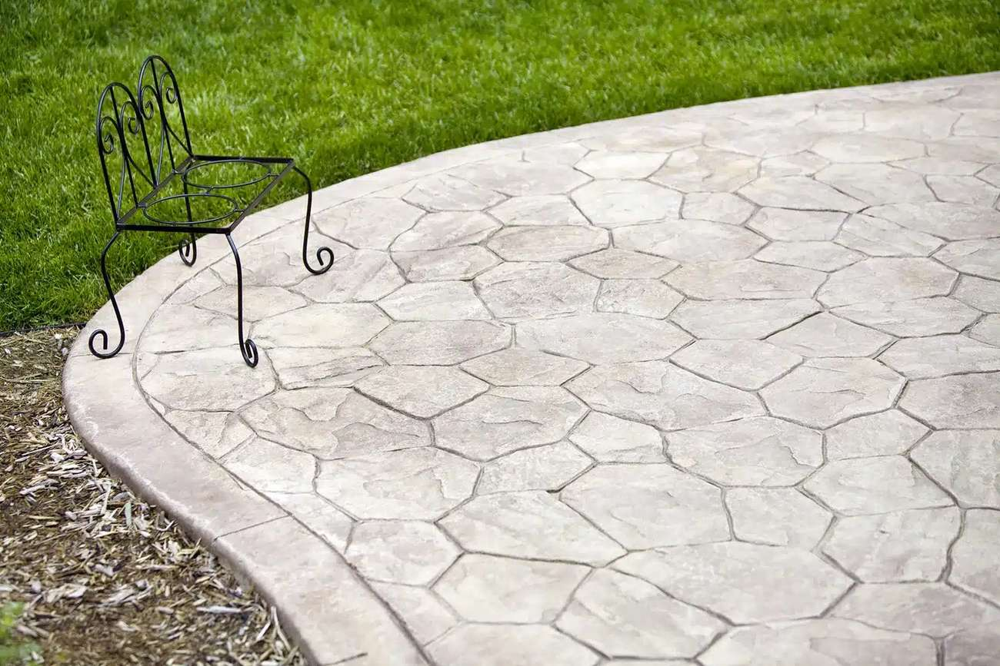

Stamped & Decorative Concrete in Logan, UT
The look of stone, brick or slate — in one solid, low-maintenance slab. Tell us about your project and we’ll work to connect you with a licensed local concrete contractor for stamped, stained and colored finishes on patios, driveways and walkways.

Stamped & Decorative Concrete in Logan & Cache Valley
Stamped concrete gives you the look of natural stone, slate, brick or wood plank — in one solid, poured slab. You get the high-end appearance of pavers without the joints where weeds grow or the individual units that shift and settle over time. Cache County Concrete helps homeowners across Logan, North Logan, Smithfield, Providence, Hyrum, Nibley and Cache Valley find licensed local contractors who install stamped and decorative concrete built to hold up to our freeze-thaw winters.
Where Stamped Concrete Works
- Patios — the most popular use, in any pattern or color.
- Walkways & entryways — a high-end first impression.
- Driveways — durable curb appeal; see the driveway page.
- Pool decks & porches — slip-resistant decorative finishes.
Patterns & Colors
Stamped concrete can mimic almost any high-end material. Popular options here include:
- Ashlar slate and random stone / flagstone — natural, organic looks.
- Brick and cobblestone — classic, structured patterns.
- Wood plank — the warmth of timber with the durability of concrete.
Color comes from integral color in the mix plus a contrasting release for depth, and stains or accent borders can add detail. A contractor can help you choose a pattern and palette that fits your home.
What Does Stamped Concrete Cost in Logan?
Stamped concrete costs more than a plain broom finish because of the added labor, color and detailing. As a rough guide it generally runs around $12 to $20+ per square foot installed, depending on the pattern, number of colors, and complexity. Simpler single-color patterns sit at the lower end; multi-color, intricate work costs more. The contractor provides a free written quote for your specific design.
Stamped Concrete vs. Pavers
Both look great, but they behave differently. Stamped concrete is one continuous slab — no joints for weeds, nothing to shift or sink unevenly, and easier to clean and seal. Pavers can be lifted and replaced one at a time, which is an advantage for repairs, but they’re more prone to weeds, settling and ant hills between units. For most Cache Valley homeowners who want the look with less maintenance, stamped concrete is the better long-term value.
How Stamped Concrete Is Installed
- Base prep — grading and a compacted gravel base, the same foundation any good slab needs.
- Pour & color — an air-entrained mix is poured and integral color applied.
- Stamping — the pattern is pressed into the concrete at exactly the right moment as it sets.
- Detailing — joints and grout lines are hand-detailed and release color applied for depth.
- Cure & seal — proper curing, then a quality sealer that protects the color and surface.
Sealing & Maintenance
Sealing is what keeps stamped concrete looking new — it locks in the color and protects against moisture, salt and UV. Plan to reseal roughly every 2–3 years (sooner on a driveway). Beyond that, it’s low-maintenance: just rinse it off and avoid harsh deicers, especially the first winter.
Stamped Concrete FAQ
How much more does stamped concrete cost than plain?
Stamped typically runs about $12–$20+ per square foot versus the lower cost of a plain broom finish. The difference covers the color, stamping labor and detailing. Pattern and color complexity drive the final price.
For example, a 300 sq ft stamped patio with one base color and one release color often runs about $3,600 to $7,500 installed. The same patio in plain broom finish is often $2,400 to $4,500. Last updated October 2026. These are general planning ranges from published cost guides, not quotes. See the full concrete cost guide for Logan.
Is stamped concrete slippery?
It can be when wet, like any smooth surface, but a clear anti-slip additive can be added to the sealer — recommended for pool decks and walkways.
Does the color fade?
Quality color is long-lasting, and resealing every couple of years keeps it rich. Without resealing, sun and traffic will dull the surface over time, which is why maintenance matters.
How long does stamped concrete last?
The concrete itself lasts as long as any quality slab — decades — when it’s installed on a proper base and kept sealed. The decorative finish stays vibrant with periodic resealing.
Can a contractor stamp over my existing concrete?
If your existing slab is structurally sound, a stamped overlay can sometimes be applied on top. If it’s cracked or failing, a new pour is the better investment. The contractor can assess it and give you an honest recommendation.
Is stamped concrete good for Utah winters?
Yes — poured with an air-entrained mix on a proper base and kept sealed, it handles freeze-thaw well. Sealing is the key to protecting the surface from salt and moisture.
Please note: Cache County Concrete is a free lead-referral and information service, not a licensed contractor, and does not perform concrete work. All quotes and work are provided by independent, licensed local contractors. Verify licensing and insurance directly with the contractor before any work begins.
Stamped Concrete in Cache Valley’s Climate
Stamped concrete looks great in Logan backyards, but our climate is hard on it. The textured surface holds water and snow, and freeze-thaw cycles plus de-icing salt can dull color and cause scaling if the slab isn’t sealed. Most local contractors recommend a quality sealer after the pour and resealing every few years, and many suggest avoiding rock salt on decorative surfaces altogether.
Pattern choice matters too. Deep textures like flagstone or slate are slip-resistant, while smoother patterns can get slick under ice, so many homeowners use a non-slip additive in the sealer for walkways and steps. Strong summer sun can fade some colors over time, so ask about integral color versus surface color and how each holds up locally.
Stamped patio, walkway and pool-deck requests come from Logan and from North Logan, Smithfield, Providence, Nibley and Hyrum. Compare a plain finish on the patios page, or see driveways.
More Questions from Logan Homeowners
Is stamped concrete a good idea in Logan, UT?
Yes, as long as it is installed with a good base and air-entrained mix and kept sealed. Regular resealing and avoiding rock salt make the biggest difference in how it holds up through Cache Valley winters.
Is stamped concrete slippery in winter?
It can be under ice, especially smoother patterns. Deeper textures and a non-slip additive in the sealer help, and many homeowners use sand rather than salt for traction.
Resurfacing: Decorative Overlays Over Existing Concrete
If you already have a solid but plain or tired-looking slab, you may not need to tear it out. A stamped or textured overlay bonds a thin decorative layer on top of sound existing concrete, giving you the look of stone, brick or tile without the cost of full replacement. It’s a great option for patios, porches and entryways where the base slab is still structurally good.
Overlays do need a stable, crack-free surface to bond to — if your concrete is sunken, heaving or badly cracked, repair or replacement comes first. At your free on-site quote, the contractor will tell you honestly whether an overlay or a fresh pour is the smarter move for your slab.
Stamped Concrete in Logan: Permits, Base Prep and Timeline
Permits. In Logan, a backyard stamped concrete patio on your own lot usually does not need a building permit. Work in the park strip, a new driveway approach, or a slab that is part of a covered patio or addition usually does, and so does work near the city sidewalk. Rules also vary across Cache Valley towns like North Logan, Hyde Park, River Heights and Providence, so ask the contractor to confirm with the city and include any permit in the written quote. If you have an HOA, get its approval before the pour.
Base prep. Stamped concrete is only as good as the ground under it. A decorative slab that cracks is expensive to fix and hard to patch without it showing. A good contractor digs out topsoil and organic material, adds 4 to 6 inches of compacted gravel, slopes the slab away from the house, and uses rebar or mesh, plus extra base where Logan clay soils hold water. Control joints get hidden in the pattern so cracks follow planned lines.
Timeline. Most residential stamped patios take two to four days of work: a day to excavate and form, a pour-and-stamp day, and a day to wash off the release and apply sealer. You can usually walk on it after 24 to 48 hours, put furniture on it after about a week, and drive on stamped driveways after 7 to 10 days. In Cache Valley the pour season runs roughly April through October, because concrete needs to stay above freezing while it cures.
Resealing. Sealer protects the color and helps the surface hold up to snow and de-icers. Plan to reseal stamped concrete every two to three years in Logan, or sooner on driveways and spots that get a lot of sun or salt. Resealing is a fairly low-cost job, and skipping it is the most common reason stamped concrete fades or flakes early. Use sand instead of salt for traction during the first winter.
Stamped Concrete vs. Pavers in Logan
Many homeowners compare stamped concrete vs pavers before they choose. Stamped concrete usually costs less to install, often about $12 to $25 per square foot compared with roughly $15 to $30 or more for installed pavers. It also has no joints for weeds to grow through and goes in faster. Pavers cost more, but individual pieces can be lifted and replaced after frost heave or utility work, and they don't crack the way a slab can. In Cache Valley's freeze-thaw winters, stamped concrete needs good base prep, control joints and regular resealing. Pavers need a well-compacted base and occasional re-sanding of the joints. For most Logan patios and pool decks, stamped concrete is the lower-cost choice, while pavers are a good fit where you want easy repairs. Asking for a quote on both from local contractors is the easiest way to decide.
How to Compare Written Concrete Quotes in Logan
Once you have two or three written quotes from local contractors, compare them line by line instead of looking only at the total. A lower number often means something was left out. Check that each quote states the gravel base depth and how it will be compacted, the slab thickness, and the reinforcement (rebar size and spacing, wire mesh or fiber). Look for an air-entrained mix, which is what holds up to Cache Valley freeze-thaw, along with the strength (usually 4,000 PSI or more for exterior work). The quote should also cover control joint spacing, the finish, tear-out and haul-off of old concrete, any permit or city apron work, cleanup, and the written warranty. If one quote leaves an item blank, ask that contractor to add it in writing so you are comparing the same job. Homeowners in Logan, River Heights, Hyde Park, North Logan and Providence all get the same free referral and the same advice: the best value is the quote that spells out the work, not the cheapest one.
Want a Decorative Finish?
Tell us what you have in mind and we’ll work to connect you with a licensed local concrete contractor anywhere in Cache Valley for a free, no-obligation quote.